about me
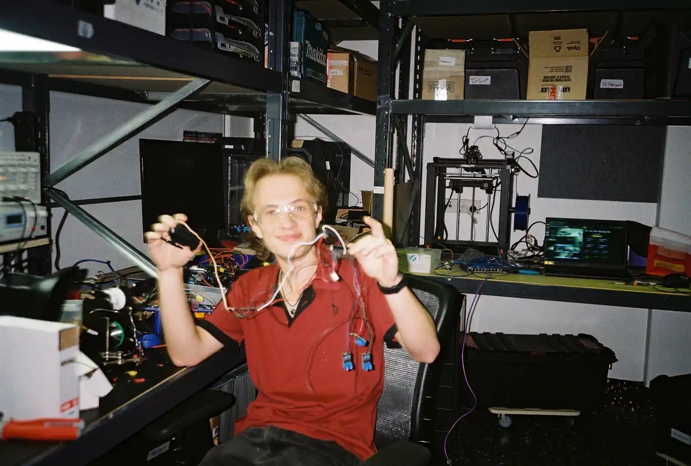
Currently pursuing concurrent Bachelor of Science (Theoretical Physics) and Bachelor of Mechanical Engineering (Honours) at Adelaide University.
I have always loved understanding why systems are the way they are - and eternal curiosity eventually leads to Physics, a field I find endlessly
fascinating. But the only thing that rivals my love of knowing why something is the way it is, is building something and seeing that evidence first hand.
Mechatronics is such an interesting intersection of these theoretical concepts applied in novel environments. I am always looking to learn something and am
particularly interested in areas of:
- Physical Intelligence and Robot Learning Methods
- Space Robotics
- Quantum Computing
- Limits of Formalised Logic
Currently: Technical Director of the Adelaide University Rover Team.
CAD / 3D SimulationPCB DesignPythonC / Embedded FirmwarePrototyping + Testing
Team LeadershipProject ManagementSystems EngineeringLarping
Technical Director (Rover, Yr 3)
2026-2027 · Adelaide University Rover Team
Managed 41 technical members and the 3 discipline leads (software, electrical,
mechanical). Responsible for the technical development of every subsystem, including
testing, validation and integration, upskilling new members, and setting up the
team's systems-engineering approach.
- Assisted in the design and development of the Water Extraction Payload: custom PCB for motor + heating
control (CAN, STM32) and a 2-axis linear rail system for precise excavation.
- Improved the drive and comms of the Mini-Rover.
- Set up new ~800 MHz communication systems.
- Built permanent motor / robotic-arm test benches (Raspberry Pi + Docker,
wall-mounted controllers, safety circuitry) and used them to teach new members.
- Wrote a custom plugin to export Inventor assemblies to URDF (Inv2Urdf).
- Maintained the full-rover CAD, including payloads.
- Co-wrote the CDR and SAR engineering documents.
Big focus of the year: simplifying the system (moving to STM32, using widely supported
hardware and software) so knowledge actually gets passed on.
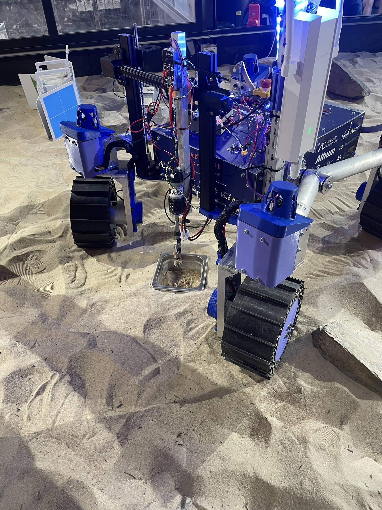
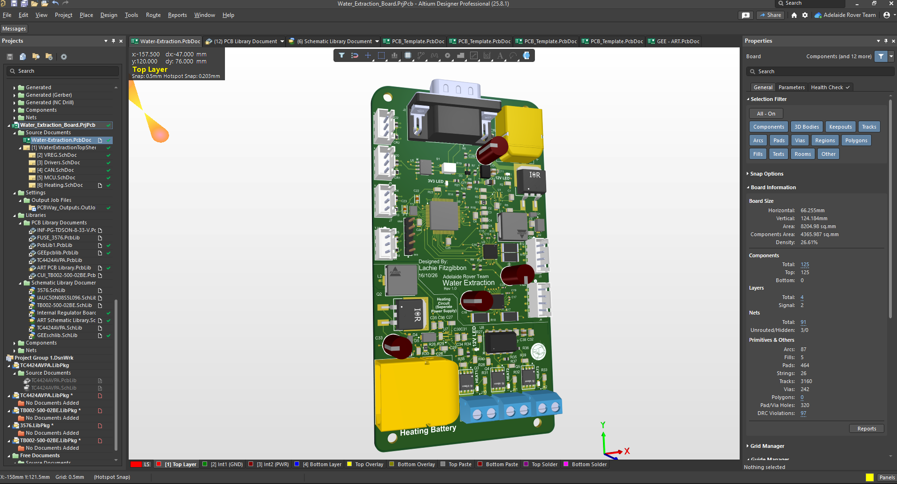

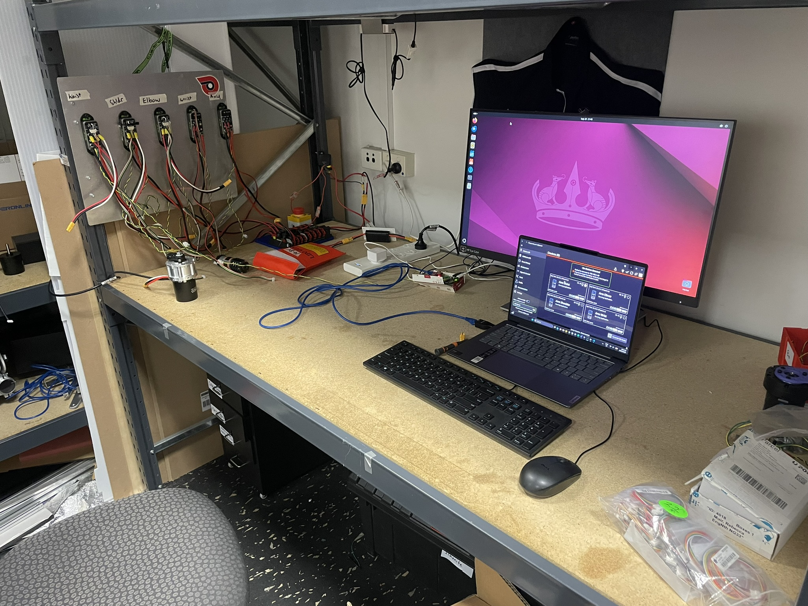

↑ back to projects
Soft Robotics End-Effector (Rover, Yr 2)
2025-2026 · Adelaide University Rover Team
Retrained from mechanical to electrical. Worked on the robotic arm's end effector across
mechanical, electrical and firmware, and pivoted to a soft-robotics / continuum design:
three tendon-driven fingers with deformable TPU tips for general-purpose grasping.
- Designed dynamic 3D assemblies of the gripper.
- Prototyped, printed and assembled each iteration.
- Designed the control PCB in Altium: voltage regulation, two motor drivers, CAN,
dsPIC microcontroller. Used at competition.
- Wrote the firmware in C, using limit switches and current sensing to detect grip pressure.
- Wrote the gripper's ROS node (my first real ROS / C++).
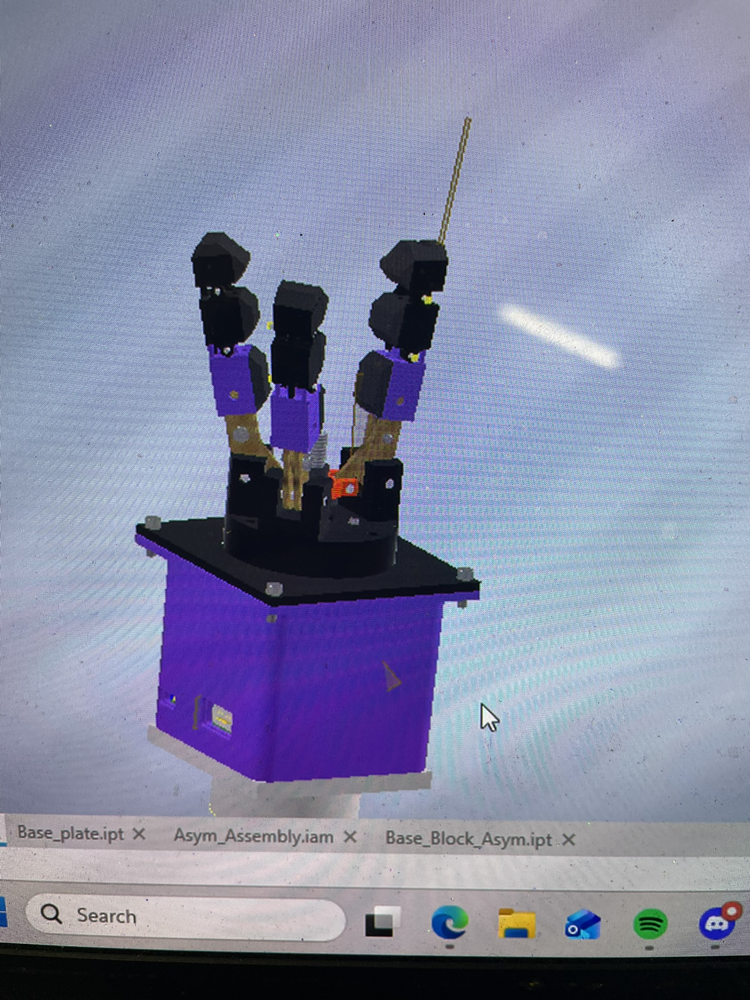
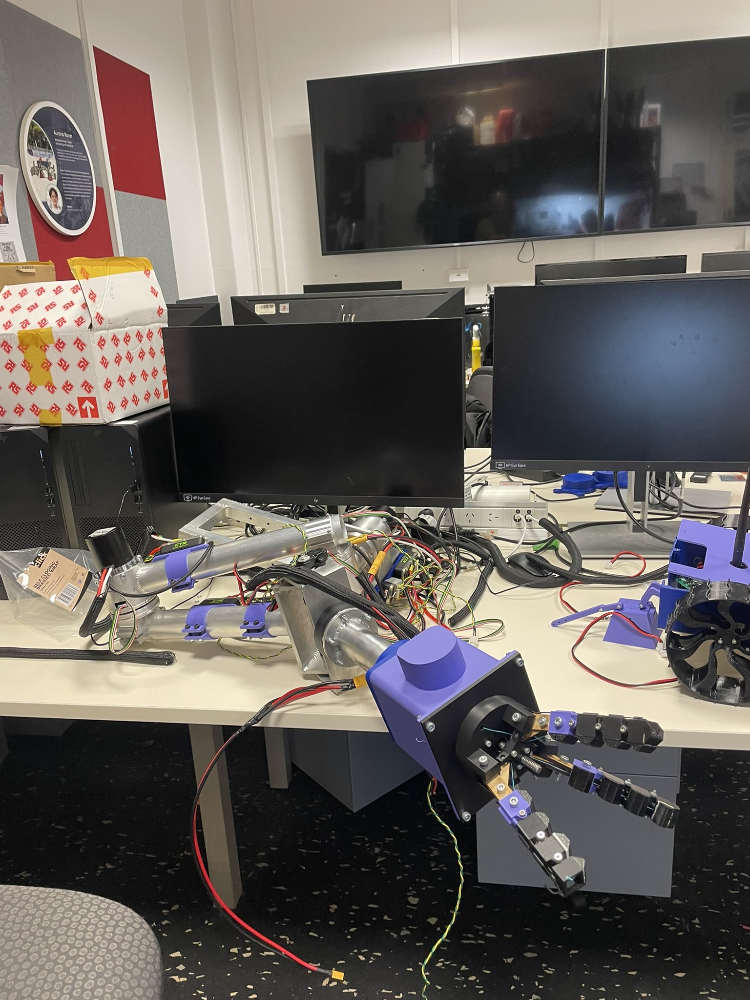
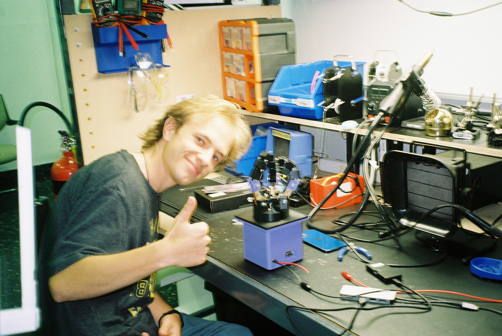
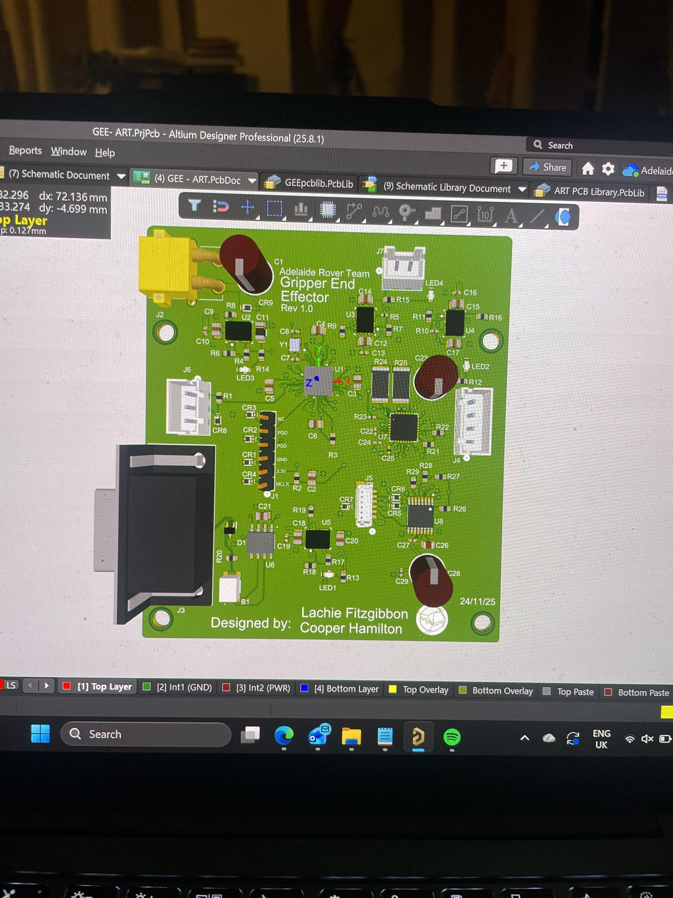

Unfortunately due to the arm not being ready for competition the gripper was not able to be utilised to its full extent.
See the gripper in action:
In the two weeks before competition, I also designed and built the whole electrical
system for the "Mini Rover" payload: Raspberry Pi 4, 4 DC drive motors, servo camera
mount, and the E-stop and warning-light safety circuitry.

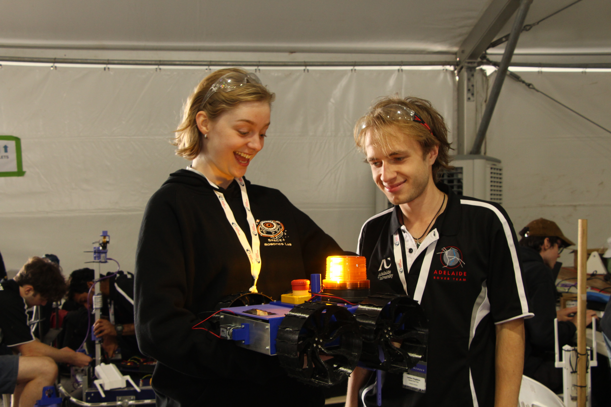

↑ back to projects
Warman Design & Build: JANK-E
2025 · Team lead, team of 5 · 1st place local, 7th international
An omnidirectional robot that collects balls, drives up and down a rotating ramp, and
drops the balls in an end zone. First time designing, building and manufacturing a
whole system from scratch, then getting to redesign it for internationals.
I wrote all of the firmware.
- Chassis: MDF → carbon fibre
- Scoop: rack and pinion → 2-DoF robotic arm
- Electronics: protoboard → custom PCB
- Perfect score on our first international run.
Also learnt a lot about leadership and tricky team dynamics, and exactly how much can
be achieved at 10pm the night before a deadline.
↑ back to projects
Location Tracking Clock
2026 · Personal project
A clock with 5 faces whose mechanical hands point to where each of my family members
currently is. Runs on a Raspberry Pi at home with a custom prototype circuit and Python
software built on the PyiCloud library.
mechanical prototypingelectrical prototypingPythonintegration


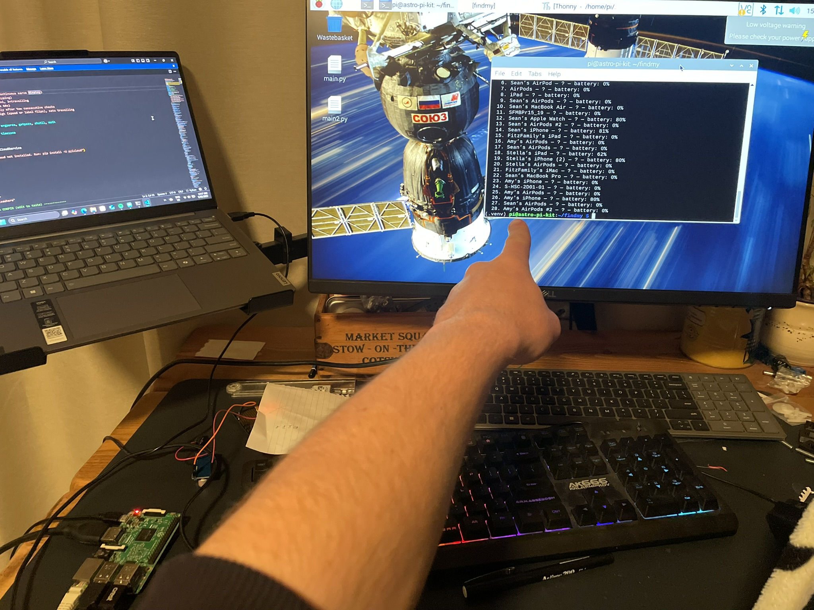
Code: GitHub repo
↑ back to projects
Inv2Urdf
2026 · Software tool
A plugin that exports Autodesk Inventor assemblies to URDF
models so the rover CAD can be used directly in ROS.
Code: GitHub repo
↑ back to projects
Differential Suspension for Lunar Rover (Rover, Yr 1)
2024-2025 · Adelaide University Rover Team · mechanical
My first year on the team. Designed an updated differential to keep the chassis
laterally balanced and constrain the motion of each side of the suspension.
- CAD in Inventor: 2D drawing standards, constraining multi-part dynamic assemblies.
- 3D printing and prototyping.
- Mechanical assembly and maintenance on the main rover before competition.
- Field team member at competition.
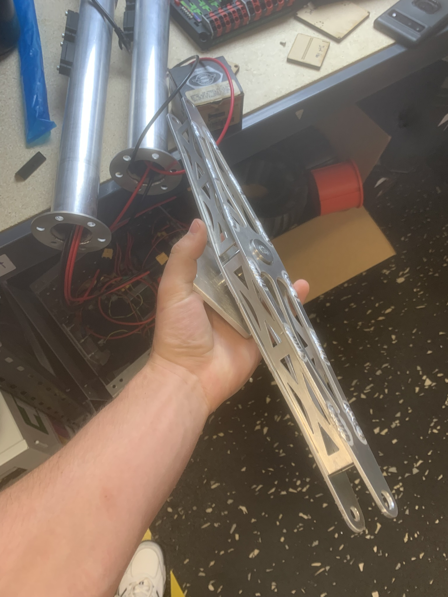

↑ back to projects
gallery
random other photos of things. click to enlarge.
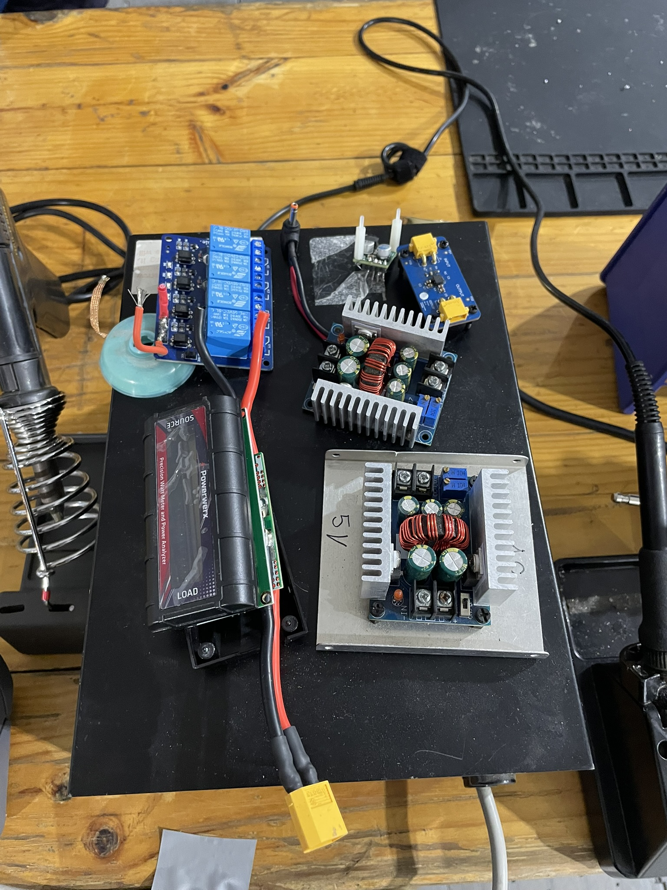
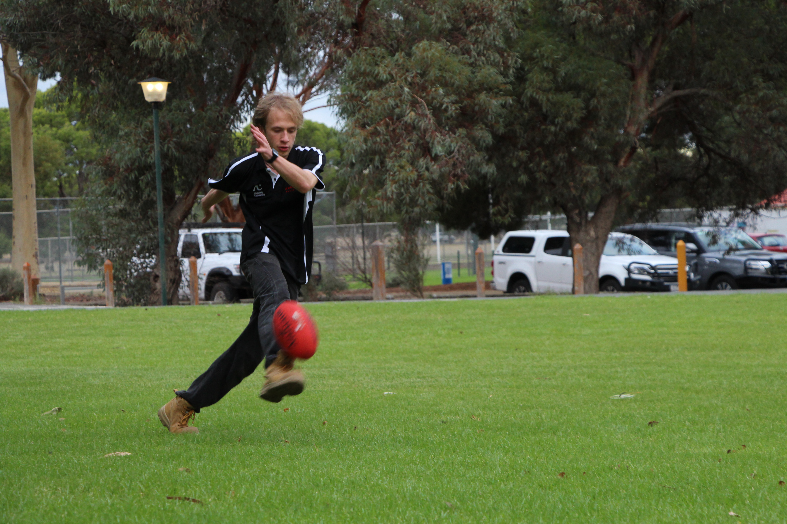
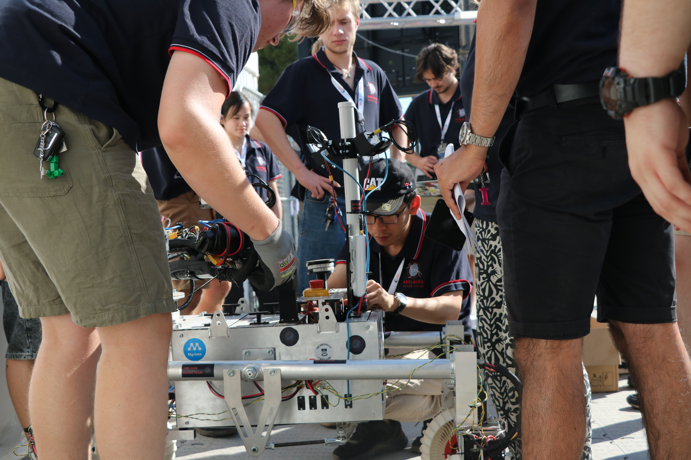
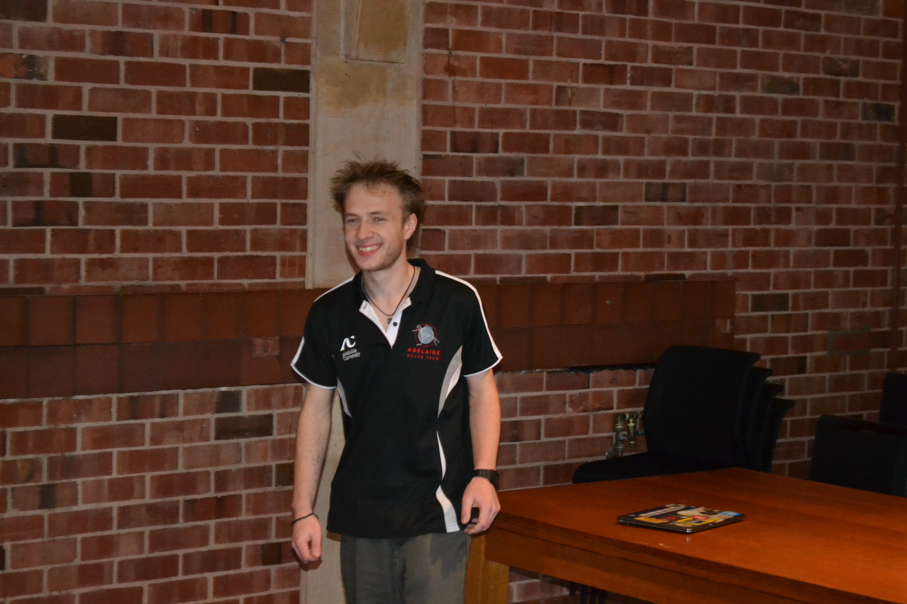


 Inv2Urdf
Inventor → URDF exporter
Inv2Urdf
Inventor → URDF exporter